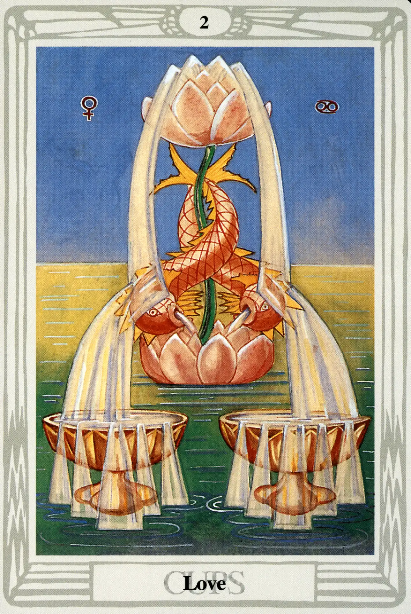

Cups
Two of Cups
Love

(Venus in Cancer)
0° to 10° Cancer
June 21 to July 1
Original Title: Lord of Love.
Golden Dawn Model: From cloud and water at the bottom, a hand appears holding by a single stem two lotuses, one rising vertically from the other. Upon the stem between the lotuses two dolphins cross. Two fountains of water (silver to the left, gold to the right) spring from the top lotus and fall upon the dolphins then down into two cups, which in turn overflow and flood the bottom of the card.
Queen Scale for Chokmah: Grey.
The Four Scales for Venus: Emerald Green; Sky Blue; Early Spring Green; Bright Rose or cerise, rayed Pale Green.
The Four Scales for Cancer: Amber; Maroon; Rich bright Russet; Dark Greenish Brown.
Formula: 2 (Chokmah) of Cups (Briah) + Venus in Cancer = LOVE
The Two of Cups is perhaps the most beautiful of the small cards of the Thoth Tarot. While Harris doesn't completely ignore the color scales, she does give herself room for innovation. The calm green sea, the rose-colored lotuses, and the amber dolphins (or are they Koi?) conform nicely, but she breaks rank a bit by giving us a violet sky. The card is magnificently beautiful and a fitting representative of the first manifestation of the element water. It is the energy of water in its best and highest form.
Harris shows her appreciation of the card by sharing a perhaps apochryphal event involving the card: “Also [at the exhibition] a little person aged 2, scuttling & crawling, was asked which picture: Straight she went to No. 2 Cups, Love. I thought she would forget &asked her again 10 minutes later &she toddled off to the same Picture. “That” she said again.
Because the number two (Chokmah on the Tree of Life) is particularly expressive of Will, Crowley wrote:
This card might really be renamed the Lord of Love under Will for that is its full and true meaning. It shows the harmony of the male and the female: interpreted in the largest sense. It is perfect and placid harmony, radiating an intensity of joy and ecstasy.